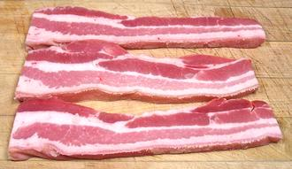

Most pork bellies end up cured and smoked into bacon, but fresh pork belly is widely used in Asian recipes. It is also used in Latin American recipes and in Eastern and Central European cooking. Pork belly is now returning to popularity in North America - see Health & Nutrition.
The photo specimen is a half belly with skin, including the part that was over the spare ribs. A cross section slice is to the left. The photo specimen was 14 inches long, 10.5 inches wide, 2-1/4 inches thick at the thickest point and weighed 6 pounds 10 ounces. A whole belly would be 28 inches long and weigh about 13 pounds.
Pork bellies may also be sold with the spare ribs still attached, and Asian markets here in Los Angeles have them both ways
Pork belly futures were once a huge item on the Chicago Mercantile Exchange, but that market has been closed for some time, to the distress of comedians. Demand is now more steady, so frozen pork bellies need no longer be stored for long periods. They are now commonly sold immediately and often fresh. This has resulted in some pricing uncertainty and volatility in bacon prices, but not enough to justify a commodities market.
More on Cuts of Pork.

Philippine markets here in Southern California have a wide selection, selling belly ribs on, ribs removed, slices with or without ribs, and cubes (without ribs). The skin is always included.
Pork belly recipes are are often quite rich due to the fat layers. I have also used the boneless end of a side of spare ribs which is leaner, but you mustn't go too lean or the recipe simply won't work right.
European recipes often call for a large square of the belly, score
the skin side, rub with herbs and spices, and roast in a moderate oven
until most of the fat has rendered out and the skin is crisp. It still
isn't really low calorie though.
Use of extremely flavorful Pork Belly and Lard, is increasing in North America, a move being lead by top chefs. The reasons for this are three: